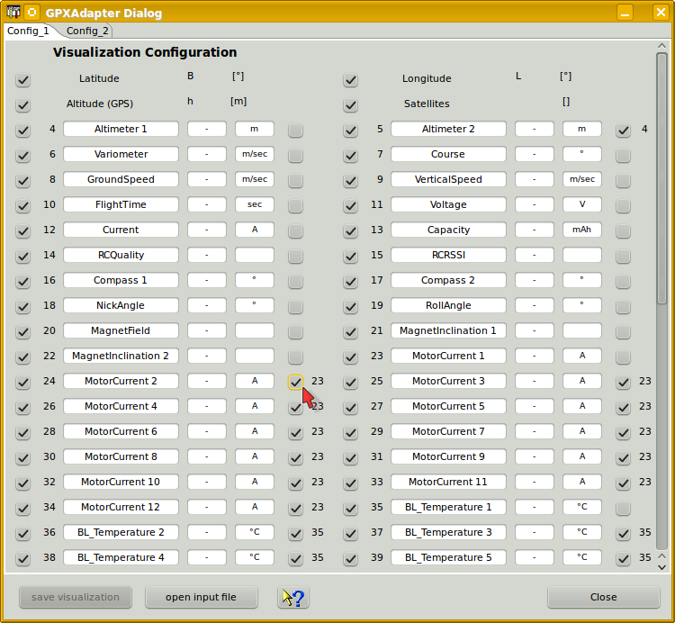

The device dialog should be used to configure the visualization of measurements. It is possible to update measurement names, symbols and unit. Even if the measurement units are editable it makes less sense to do without adding a measurement factor in respect to the change. The measurement names are contained within the log data and get overwritten while reading. Unchecked measurement will not be displayed. This will lead to a more clear representation, curves which are hard to be interpreted in two dimensional way, may be blanked out. It is possible to import data files using the 'import data' button as well. Curves without reasonable data are not displayed. The GPS data measurement values are the once which have a strict alignment to measurement ordinals to enable a check of reasonable GPS data and display export capabilities. While GPS data are available it is possible to load and display such data in Google Earth using KMZ files. This files can be exported using the file menu or directly launched to an installed Google Earth application. How to do so, refer to Toolbar -> Google Earth.

GPX files always contain GPS coordinates. Additional, so called, "extensions" are contained optional and are described with names and values, partly comma separated. For extensions we do not have specifications, therefore it is required to complete symbols and units by our own. There are already two pre-configured measurement configurations to support different sets of sensors and address associations. Using the device properties editor it would be possible to add some more, if this is really required.
At the right hand side of the configuration panel are check boxes which enable a semi automatic scale synchronization. While checking measurement name will be compared to previous once and the fitting measurement ordinal will be added to the measurement configuration entry. Using scale synchronization will reduce the required space for scales and spend more for the graphics. Overlaying curves in this matter will allow direct comparison without using the curve compare window.
Using the DevicePropertiesEditor it is possible to synchronize almost every curve to another by configuration. Sure, this makes only sense for curves where use somehow matching range of values. Now it time to import data and cross check again if the unit, symbol a name matches the requirements. Do the curves and data match it is possible to select the synchronization check boxes. Finally save the configuration. To archive all capabilities of DataExplorer's statistical calculations refer to Statistic View Window.
Hint: While changing curve names, symbols units or synchronization entries the device configuration file gets changed. With a later version of DataExplorer the device properties schema might change (DeviceProperties_Vxy.xsd), in this case a backup copy of the complete device configurations will be created (Devices_Vxy-1.xsd) and your change will remain there. The out dated device configuration file can be used as template to update the new version.
Tip: Are there high numbers of extension data contained in the GPX file, for example with Mikrokopter files, there is a capability to map measurement values to different names (translation), mapping of units, adding scale factors, scale synchronization, and so on. Please look up in the text file Mappings/GPXAdapter.properties and change if required. The file can be found below %AppData%/DataExplorer, resp. home-directory/.DataExplorer, resp. home-directory/Library/Application Support/DataExplorer. The content should be self explaining. If the file gets deleted it will be re-created while next initialization of the GPXAdapter. With an empty GPXAdapter.properties file the configuration will be done exclusively using the devive dialog. Take care to have overwritten measurement names, comming from GPX file, but symbols, units and scale synchronization keeps preserved. Since extensions vary in number, name and are not in a defined sequence prefer the way using the GPXAdapter.properties. The number and names in this file doesn't matter. With overlaps in names over several different GPX files the displayed result will always individual for the imported file.